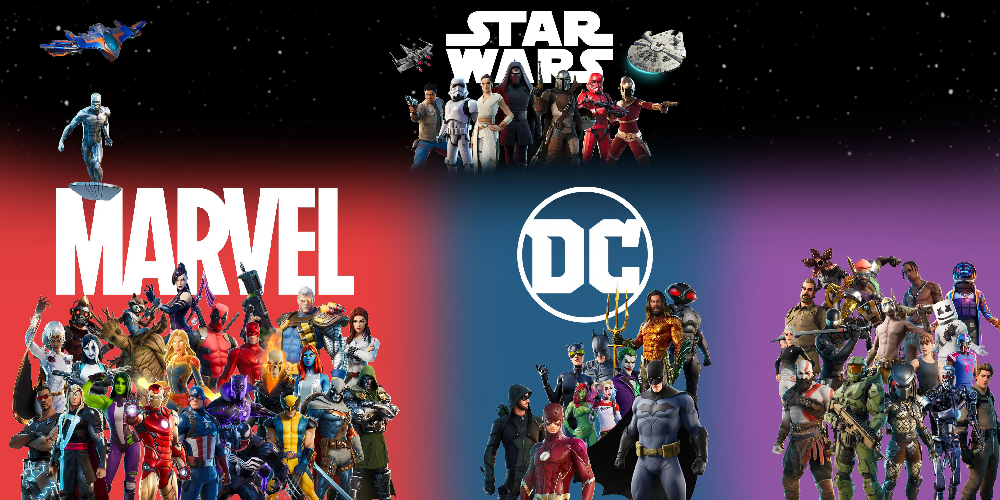

Rövid története:
A Fortnite eredeti módja a Save The World, amely egy máig kedvelt kooperatív túlélős játék. Az Epic Games mikor látta, hogy a Battle Royale műfajjal mekkora sikereket lehet elérni – főként a PUBG esetében –, gyorsan nekilátott a saját Battle Royale játékának az fejlesztéséhez, amelyhez csupán a Save The World elemeit kellet kissé átalakítania. Ennek az eredményét láthatjuk a lenti Gameplay Trailerben.
Miért ennyire híres?:
A Fortnite Battle Royale internetes kulturális jelenséggé nőtte ki magát, számos híresség is megosztotta, hogy ő is játszik a játékkal, míg több sportoló Fortnite-táncokat utánzott a győzelmi ünnepléseik részeként. 2018 márciusában egy élő internetes közvetítés, amely alatt Ninja streamer Drake, Travis Scott, Kim Dotcom és JuJu Smith-Schuster Pittsburgh Steelers-wide receiver társaságában játszott a Fortnite Battle Royale-ral megdöntötte a Twitch nézettségi rekordját, aminek hatására az Epic 2018 júniusában a 2018-as E3 keretében egy Fortnite Battle Royale-pro–amet rendezett, melyben 50 streamerből és profi játékosból, illetve hírességből álló csapat vett részt. Az Epic Games szervezett e-sport-versenyeket alakított ki a Fortnite Battle Royale körül, köztük a 2019 júliusában megrendezett 30 millió dolláros fődíjazású Fortnite World Cupot is.
További információk:
Fortnite Magyarországon
- Magyar streamerek
- Magyar esport
- Sokan játszák M.o-n?
Érdekességek a Fortniteról
- Világbajnokság
- Karrierek csúcspontja
- Problémák